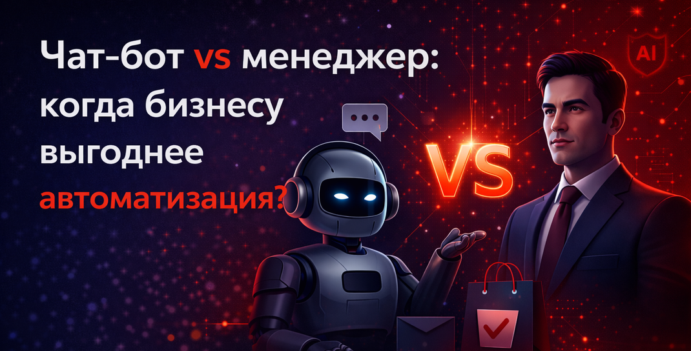
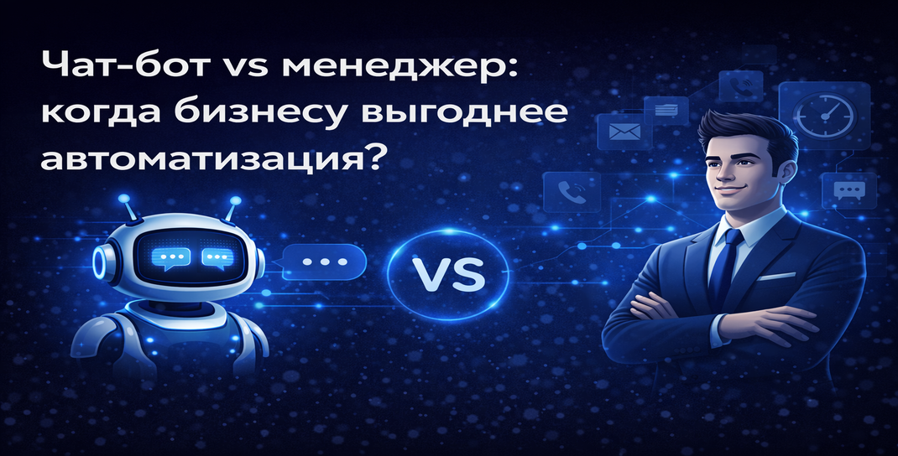

Бизнесу больше не нужно выбирать только один путь. Но чтобы не терять деньги, важно понимать: где чат-бот приносит прибыль, а где живой менеджер незаменим. Разберёмся без иллюзий — на сценариях, логике продаж и здравом смысле. Если вы только оцениваете зачем бизнесу чат-бот для продаж, эта статья поможет понять, где автоматизация даёт максимум пользы.
Почему вообще встал этот вопрос
Рост стоимости привлечения клиента, высокая нагрузка на отдел продаж и ожидания мгновенного ответа сделали автоматизацию не просто удобной опцией, а прямой точкой роста для бизнеса. Это особенно актуально для компаний, которые уже внедряют решения для автоматизации коммуникации и хотят снизить потери на первом контакте с клиентом.
Типичная ситуация:
- клиент пишет ночью — ответа нет и он уходит к конкуренту;
- менеджер отвечает через 10–30 минут — конверсия падает;
- один сотрудник ведёт десятки диалогов одновременно — страдает качество общения.
В этот момент бизнес начинает смотреть в сторону чат-ботов и голосовых помощников. А если компания уже использует AI-продукты для продаж, автоматизация становится не дополнением, а частью всей воронки.

Где чат-бот реально сильнее менеджера
1. Скорость ответа = больше продаж
Чат-бот отвечает мгновенно и работает 24/7. Для клиента это означает, что он получает реакцию сразу, а для бизнеса — что не теряются горячие заявки.
Что это даёт:
- не теряются горячие лиды;
- выше конверсия с рекламы;
- лучше пользовательский опыт.
Чем быстрее бизнес отвечает на первый запрос, тем выше шанс довести диалог до продажи. Поэтому компании всё чаще внедряют чат-ботов и голосовых помощников уже на первом этапе общения.
2. Обработка большого потока без роста затрат
Боту всё равно — 10 клиентов в день или 1000. Он не устает, не выгорает и не просит нанимать ещё троих сотрудников при росте рекламы.
В отличие от менеджера, бот:
- не устаёт;
- не ошибается из-за перегрузки;
- не требует роста фонда оплаты труда при увеличении потока заявок.
Особенно это важно для онлайн-школ, e-commerce, сервисных компаний и бизнеса, который получает много однотипных обращений. Для таких сценариев полезно заранее продумать архитектуру автоматизации бизнес-процессов.
3. Автоматическая квалификация лидов
Чат-бот может:
- задать нужные вопросы;
- отфильтровать нецелевые обращения;
- собрать контакты и вводные данные;
- передать менеджеру только тёплых клиентов.
Результат:
- менеджеры не тратят время впустую;
- сокращается стоимость продажи;
- отдел продаж работает с более качественными лидами.
4. Снижение затрат
Средний менеджер — это:
- зарплата и бонусы;
- обучение;
- адаптация;
- текучка и риск просадки качества.
Чат-бот требует настройки и поддержки, но в масштабировании обходится бизнесу заметно дешевле. Это особенно выгодно там, где много повторяющихся сценариев и типовых вопросов.
Где менеджер пока выигрывает
1. Сложные и дорогие продажи
Если продукт дорогой, требует доверия, нескольких касаний и персонального подхода, человек обычно продаёт лучше. Это особенно заметно в B2B, консалтинге, недвижимости, медицине и услугах с длинным циклом сделки.
2. Работа с возражениями
Бот работает по логике сценария. Менеджер работает по ситуации: слышит сомнения, подстраивает аргументы, улавливает эмоции и может дожать сделку там, где автоматизация уже упирается в пределы шаблонов.
3. Нестандартные кейсы
Когда клиент задаёт редкий вопрос, просит особые условия или описывает нестандартную ситуацию, менеджер быстрее найдёт подходящее решение. Бот в таких сценариях лучше использовать как первую линию, но не как единственную.
Чат-бот vs менеджер: честное сравнение
| Критерий | Чат-бот | Менеджер |
|---|---|---|
| Скорость ответа | Мгновенно | Зависит от загрузки |
| Работа 24/7 | Да | Нет |
| Масштабируемость | Очень высокая | Ограничена |
| Стоимость обработки обращений | Ниже | Выше |
| Гибкость в переговорах | Средняя | Высокая |
| Сложные продажи | Слабее | Сильнее |
Лучшее решение: гибридная модель
Самая прибыльная стратегия сегодня — не заменять менеджеров полностью, а усиливать их ботами. Именно эта модель даёт бизнесу максимум скорости и качества одновременно.
Как это работает:
- бот отвечает мгновенно и принимает первый контакт;
- собирает данные и квалифицирует заявку;
- менеджер подключается к тёплому лиду;
- человек закрывает сделку там, где важны доверие и аргументация.
В результате бизнес снижает нагрузку на команду, ускоряет обработку заявок и повышает конверсию. Если вам интересна более широкая перспектива, посмотрите также как ИИ меняет бизнес-процессы и где автоматизация даёт максимальный эффект.
Когда бизнесу точно пора внедрять чат-бота
Если у вас совпадает хотя бы несколько пунктов, вы уже теряете деньги без автоматизации:
- много входящих заявок;
- клиенты пишут вне рабочего времени;
- менеджеры не успевают отвечать всем;
- высокая стоимость лида;
- много повторяющихся вопросов;
- нужно быстрее квалифицировать обращения.
Вывод
Чат-бот — это не замена менеджера любой ценой. Это инструмент увеличения прибыли. Бот даёт скорость, масштаб и экономию. Менеджер даёт доверие, гибкость и закрытие сложных сделок. Поэтому выигрывает не тот бизнес, который выбирает что-то одно, а тот, который грамотно сочетает оба подхода.
VoxFlowAI помогает внедрять AI-решения для бизнеса: автоматизировать коммуникацию с клиентами, усиливать продажи и строить современные цифровые процессы. Посмотреть решения VoxFlowAI или оставить заявку на консультацию.